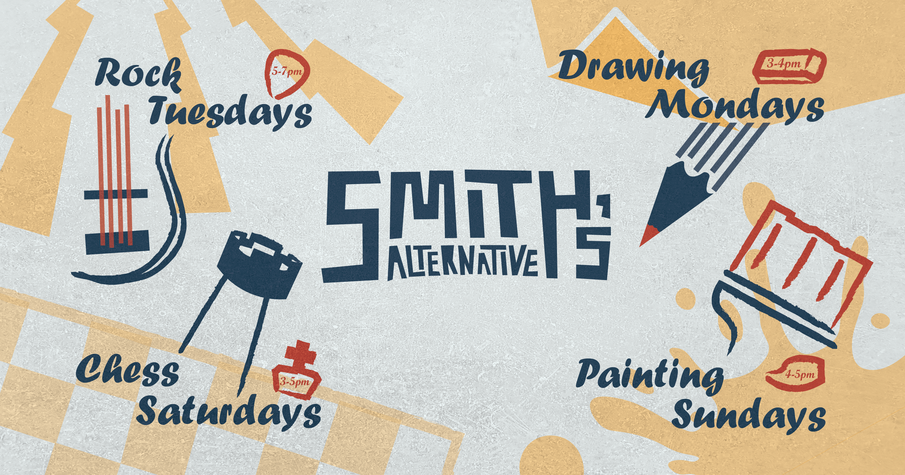
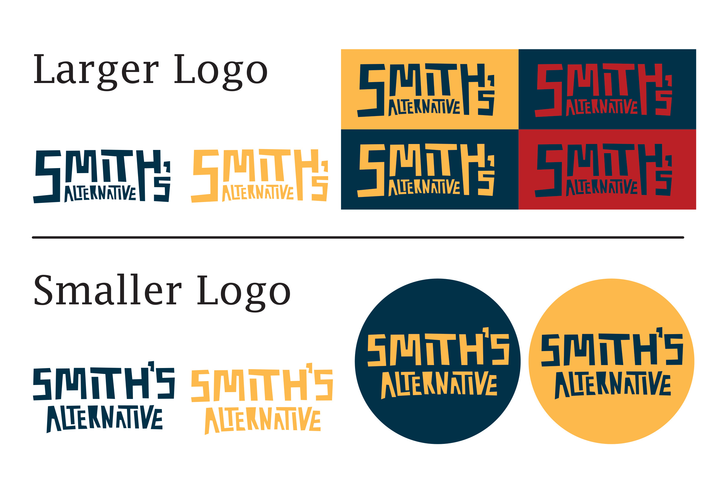
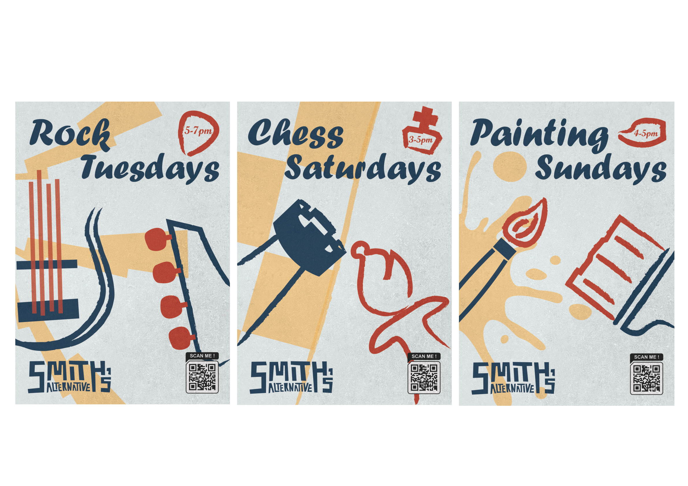
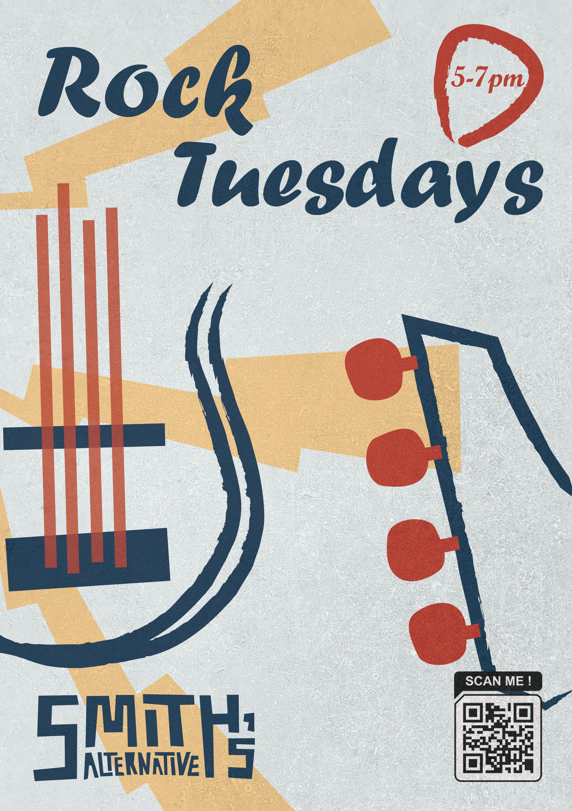
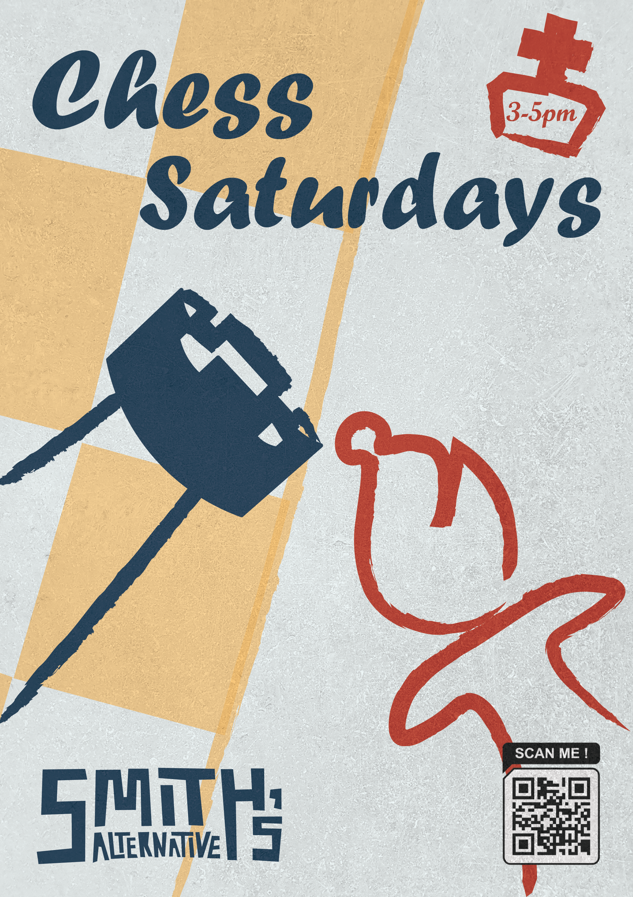
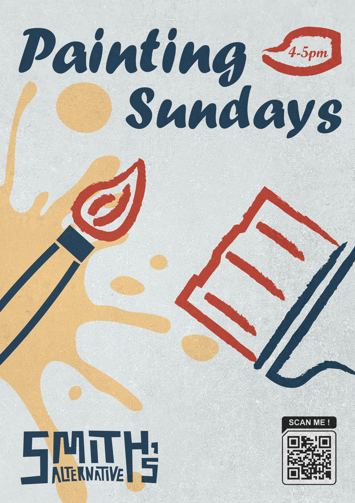
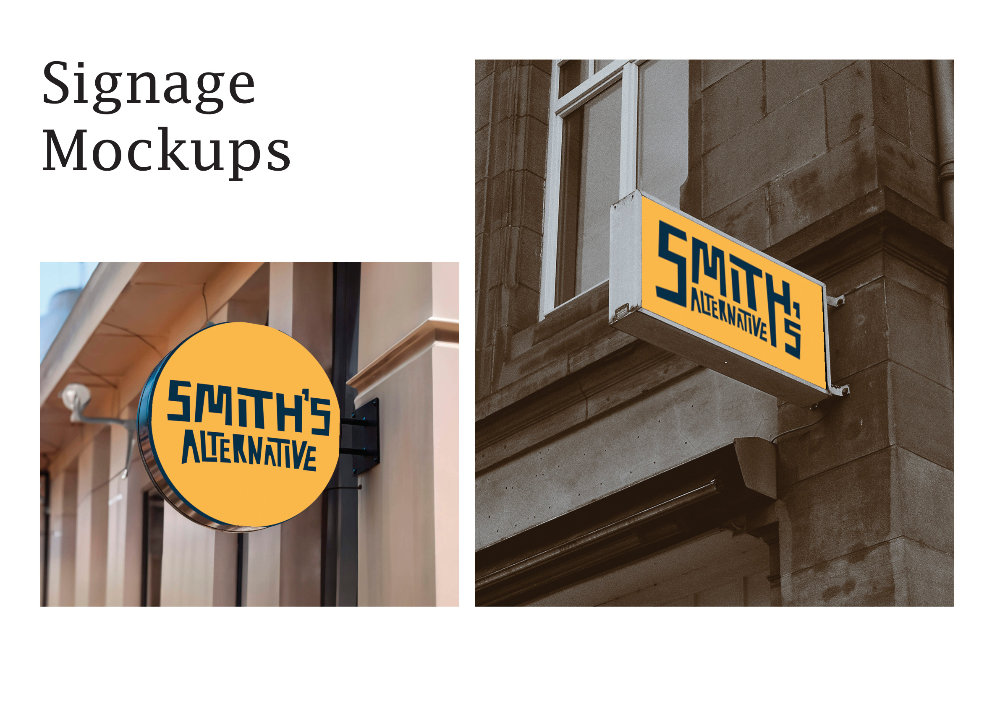
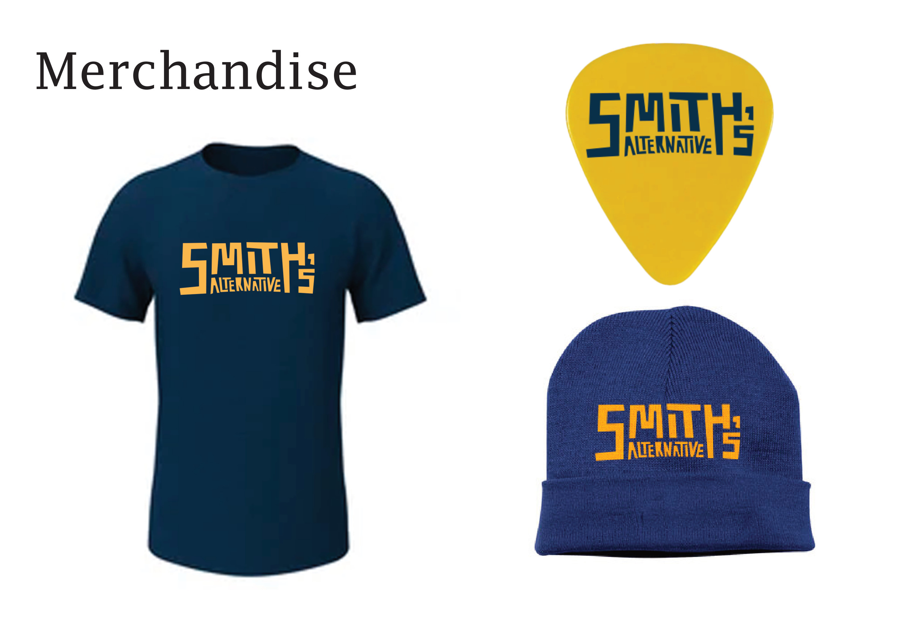

DIGITAL / 03
Smith’s Alternative — Branding Proposal
- WORK
- Alternative visual identity proposal
- YEAR
- 2024
- MEDIUM
- Logo design · Event graphics · Promotional posters · Signage and merchandise mockups
- CONTEXT
- Solo design project · Developed with feedback from the actual client

Overview
This solo identity project proposed a new visual direction for Smith’s Alternative, an eclectic Canberra venue combining live music, creative events, games and social gatherings. I worked collaboratively with the real client during development, although the identity was never implemented.
The proposal explored how a distinctive, adaptable graphic system could reflect the venue’s mix of vintage character, creative programming and community activity.
Design Brief
Create an alternative brand identity that feels energetic, eclectic and recognisable across different uses, from the venue’s primary logo to event posters, signage and merchandise.
The concept needed to unite a diverse programme of music, art and community events without flattening the venue’s individual character.


Process
I developed an expressive visual language using an angular custom logotype, a small set of contrasting brand colours and bold graphics inspired by the venue’s vintage, creative atmosphere. The identity was tested in both compact and expanded logo formats and across different colour combinations.
I then adapted the system into individual posters for a range of proposed weekly events, allowing each event to have its own image and tone while retaining the same overarching graphic identity.
Finally, I explored how the concept could extend into physical space and everyday branded objects through signage and merchandise mockups.





Outcome
The outcome was a cohesive alternative identity proposal, including logo variants, event posters, signage concepts and merchandise mockups. The completed work demonstrated how a flexible graphic language could support a venue with varied creative programming.
The identity remained a proposal and was not adopted or introduced by Smith’s Alternative. Its value was in developing a complete, client-informed visual system and exploring its applications across different formats.